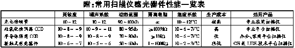

|
|
| 当前位置：电脑报电子版 > 1999 年 > 45 期 > OA专刊 > 扫描仪常用感光器件一览 |
| 《 扫描仪常用感光器件一览 》 |
| 目前市场上扫描仪所使用的感光器件有四种：光电倍增管，硅氧化物隔离CCD，半导体隔离CCD，接触式感光器件（CIS或LIDE）。
一、光电倍增管 这种扫描器件实际是一种电子管，感光材料主要是金属铯的氧化物，并掺杂了其他一些活性金属（主要是镧系金属）的氧化物进行改性，以提高灵敏度和修正光谱曲线，用这种材料制成的光电阴极射线管，在光线照射下，能够发射电子，称为光电子，经栅极加速放大后冲击阳极，形成电流。在各种感光器件中，光电倍增管是性能最好的一种，无论在灵敏度，噪声系数还是动态范围上都遥遥领先于其他感光器件，更难能可贵的是，它的输出信号在相当大范围上保持着高度的线性输出，使输出信号几乎不用做任何修正就可以获得准确的色彩还原。 光电倍增管在各种感光器件中是生产成本最高的，而且由于一次只能扫描一个像素，因此扫描速度很慢，扫描一张图需要几十分钟。因此，它现在只用在最专业的鼓式（大滚筒）扫描仪上，这种扫描仪的价格少则几十万元，多则几百万元，是一种可望而不可及的贵族产品。 二、硅氧化物隔离CCD和半导体隔离CCD 这两种感光器件与我们日常使用的半导体集成电路相似，在一片硅单晶上集成了几千到几万个光电三极管，这些光电三极管分为三列，分别用红绿蓝三色的滤色镜罩住，从而实现彩色扫描。光电三极管在受到光线照射时可以产生电流，经放大后输出。半导体隔离CCD感光器件近年来性能提高很大，其高端产品的性能已经接近低档的光电倍增管产品。但由于数千个光电三极管的距离很近（微米级），并且各三极管之间是依靠半导体PN结来绝缘，隔离电阻较小，因此，在各光电三极管之间存在着明显的漏电现象，使各感光单元的信号相互干扰，降低了扫描仪的实际清晰度。 为了改善这一情况，现在可以采用硅氧化物隔离技术，也就是说，在器件加工过程中，将各个光电三极管之间的半导体单晶硅用SiO2(二氧化硅)替代，由于SiO2 是非常好的绝缘材料，几乎杜绝了各光电三极管之间的漏电现象，因而在两台扫描仪性能指标相同的情况下，使用硅氧化物隔离CCD的扫描仪的实际清晰度将有一个质的飞跃。 不过这种技术产品的生产成本比半导体隔离技术产品的成本高几倍，因此目前只能用在5000元以上专业级扫描仪中。而目前市场上的几乎所有家用和办公用扫描仪，都是采用半导体隔离CCD，性能不可能不受影响。 但最近听说有一个扫描仪厂家已经推出了使用硅氧化物隔离CCD的家用、办公用扫描仪，价格仅2000多元，这下可以花很少的钱，领略一下专业级扫描仪的风采了。 三、接触式感光器件（CIS或LIDE） 接触式感光器件，又称CIS器件或LIDE器件，这是最近一年来刚出现的新名词，最近在市场上被炒得火热。  |
| 下载本期推荐软件 | 页 首 |
| 《电脑报》版权所有，电脑报网站编辑部设计制作发布 |